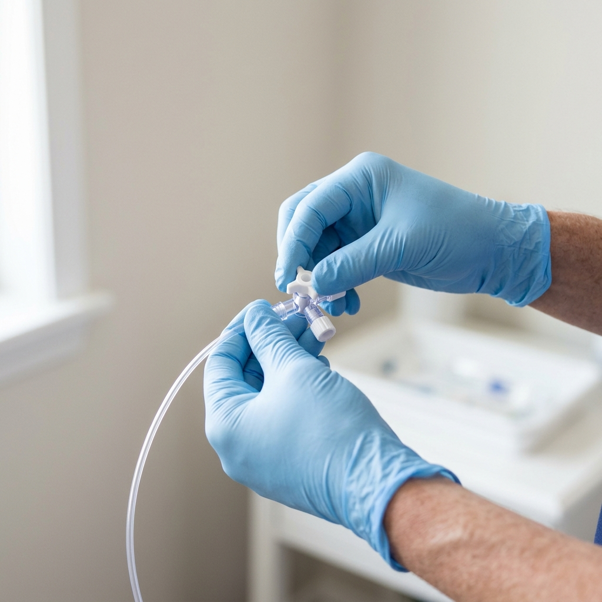
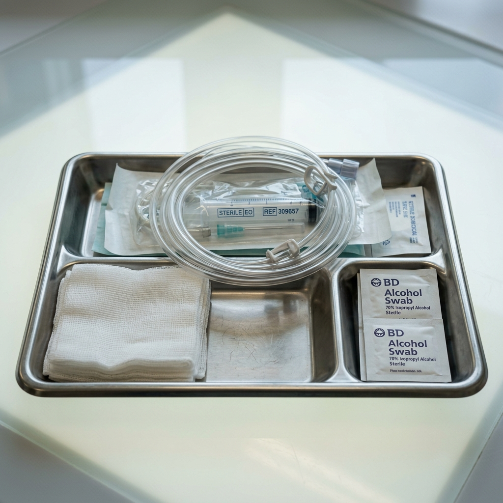
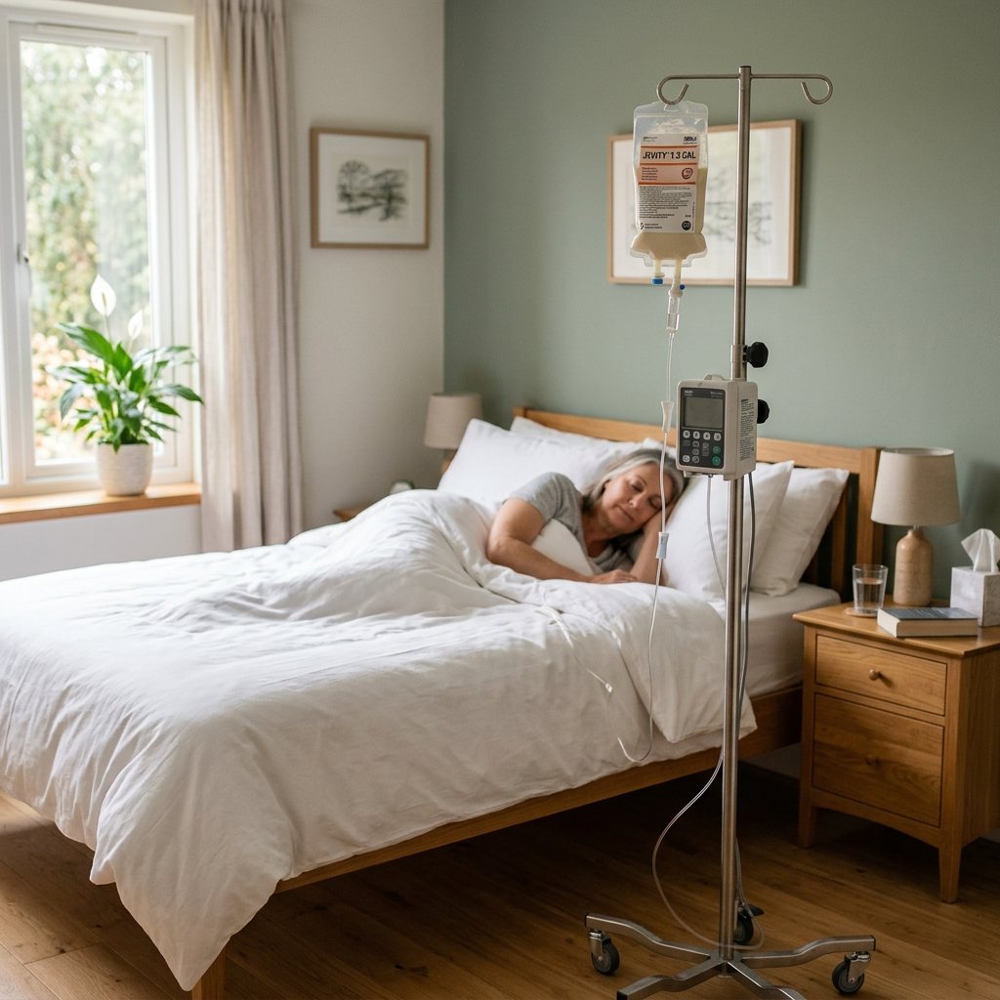

Precisa de um enfermeiro
para passagem de sonda?
Atendimento particular para diferentes necessidades de sondagem.
Entre em contato, explique a situação e verifique a possibilidade de realização do procedimento conforme a necessidade apresentada.
Goiânia e Aparecida de Goiânia · Atendimento particularTalvez você tenha chegado aqui porque precisa resolver uma destas situações.
Cada necessidade pode exigir informações e cuidados diferentes antes da realização do procedimento.
“Foi solicitada a passagem de uma sonda.”
“A sonda precisa ser trocada.”
“Um familiar precisa do procedimento.”
“Disseram o nome da sonda, mas eu não sei exatamente o que preciso fazer.”
Diferentes necessidades de sondagem exigem diferentes cuidados.
SONDAGEM VESICAL
Atendimento relacionado à sondagem vesical, mediante compreensão prévia da necessidade apresentada.
SONDAGEM NASOGÁSTRICA
Atendimento relacionado à sondagem nasogástrica conforme a necessidade e as condições apresentadas.
SONDAGEM OROGÁSTRICA
Atendimento relacionado à sondagem orogástrica conforme a necessidade apresentada.
SONDAGEM NASOENTÉRICA
Procedimento que exige avaliação prévia das condições e dos requisitos aplicáveis antes da confirmação do atendimento.
Tudo bem.
Você não precisa dominar os termos técnicos antes de entrar em contato. Informe o que foi solicitado, conte brevemente a situação ou envie as informações que tiver. A necessidade é compreendida antes da confirmação do atendimento.
Explicar minha situação no WhatsApp →Primeiro, é preciso entender a necessidade.
ENTENDER
Você explica a situação e o procedimento solicitado.
VERIFICAR
São verificadas as informações necessárias para compreender a possibilidade do atendimento.
COMBINAR
Quando aplicável, local e horário são alinhados.
ATENDER
O procedimento é realizado conforme a necessidade apresentada e dentro das atribuições profissionais aplicáveis.
Atenção e protocolo de segurança em cada etapa do atendimento.
“Pode ser feito em casa?”
O atendimento de enfermagem pode ocorrer em diferentes ambientes. A possibilidade de realização e o local adequado dependem do procedimento e da situação apresentada, por isso a necessidade é verificada previamente.




O enfermeiro responsável pelo seu atendimento.
MARUAN RAMOS VAZ · ENFERMEIROGraduado em Enfermagem pela UNESC, Maruan realiza atendimento particular de enfermagem com atenção à compreensão da necessidade, à segurança e à orientação durante o cuidado.
“Conhecimento para cuidar.
Presença para acolher.”
Atendimento particular em Goiânia e Aparecida de Goiânia.
Antes de solicitar a sondagem.
01 Maruan realiza passagem de sonda?
Sim. O primeiro contato serve para compreender qual procedimento foi solicitado e as condições necessárias para o atendimento.
02 Não sei o nome da sonda. Posso entrar em contato?
Sim. Você pode explicar a situação e informar o que foi orientado ou solicitado. A necessidade é compreendida antes da confirmação do atendimento.
03 A passagem de sonda pode ser realizada em casa?
Dependendo do procedimento e da situação apresentada, o atendimento de enfermagem pode ocorrer no domicílio. A possibilidade deve ser verificada previamente.
04 Maruan realiza atendimento relacionado à sondagem vesical?
Sim. A necessidade deve ser apresentada previamente para compreensão do procedimento solicitado e das condições do atendimento.
05 E sonda nasogástrica, orogástrica ou nasoentérica?
Essas necessidades podem ser informadas no primeiro contato. Cada procedimento possui particularidades e a possibilidade do atendimento deve ser verificada previamente.
06 Posso solicitar atendimento para meu pai, minha mãe ou outro familiar?
Sim. O contato pode ser realizado por familiar ou responsável para explicar a necessidade.
07 Preciso ter a sonda e os materiais?
Essa informação deve ser alinhada previamente, de acordo com o procedimento necessário.
08 Como funciona o primeiro contato?
Você explica a situação pelo WhatsApp e envia as informações disponíveis. A partir disso, são alinhados a possibilidade do atendimento e os próximos passos.
Precisa de atendimento para passagem de sonda?
Conte sua necessidade antes de agendar.
Falar com Maruan pelo WhatsApp → Goiânia · Aparecida de Goiânia